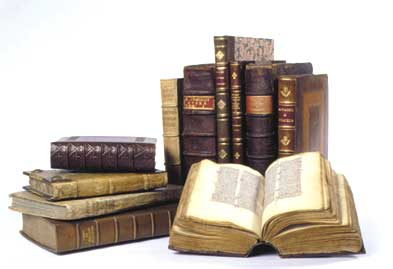
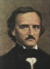
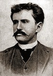

 Explore the poetry and prose of great American writers from the 19th and 20th centuries, from Washington Irving to Ernest Hemingway. Learn how the life experiences of these writers shaped their work, and how their writing influenced literary history, from the romantic movement through the rise of realism and naturalism. Write your own poetry and prose in the style of these great writers.
Reading List
(required, optional)

E. A. Poe
E. A. Poe
Week 1: The Romantic Movement
Washington Irving, Rip Van Winkle
Edgar Allen Poe, The Raven
Walt Whitman, Song of Myself

O. Henry
O. Henry
Week 2: Realism and Naturalism
O. Henry, The Gift of the Magi
Edna St. Vincent Millay, Renascence
Amy Lowell, Lilacs